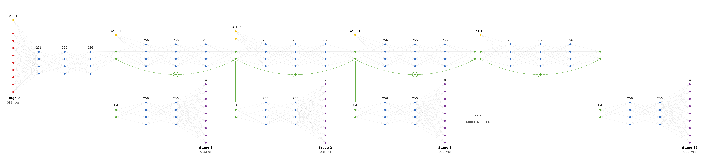

Surrogate model architecture (ModularMLP)¶
Explains the neural surrogate that stands in for TraceWin inside SurrogateEnv /
DifferentiableSurrogateEnv: its exact input/output contract and its layer-by-layer structure
(beam_optimization/env/surrogate_env/surrogate/model/modular_mlp.py).
This notebook is read-only and scoped to architecture only: it instantiates a model in memory to
inspect its structure (layers, shapes, parameter counts), it does not train, fine-tune, or overwrite
any checkpoint, and it does not evaluate prediction accuracy -- that belongs in evaluator.py / a
dedicated results notebook, once a trained checkpoint exists.
Related notebooks:
env/dataset/visualize_dataset.ipynb— theBeamDatasetthis model is trained on: per-parameter/per-stage statistics, distributions, correlations. The normalization statistics used below are computed directly from that same dataset.env/visualize_environments.ipynb— section 0 explains theBeamSimulator.simulate()contract shared byTraceWinSimulatorandSurrogateBeamSimulator; this notebook is the deep dive on what actually runs inside the surrogate half of that contract.
from pathlib import Path
import sys
import tempfile
import matplotlib.pyplot as plt
import numpy as np
import pandas as pd
import torch
from IPython.display import Markdown, display
WORKING_DIR = Path.cwd().resolve()
if (WORKING_DIR / 'beam_optimization').is_dir():
REPO_ROOT = WORKING_DIR
else:
PROJECT_ROOT = WORKING_DIR
while PROJECT_ROOT.name != 'beam_optimization' and PROJECT_ROOT.parent != PROJECT_ROOT:
PROJECT_ROOT = PROJECT_ROOT.parent
REPO_ROOT = PROJECT_ROOT.parent
if str(REPO_ROOT) not in sys.path:
sys.path.insert(0, str(REPO_ROOT))
from beam_optimization.config.adige import (
BEAM_STATE_DIM, BEAM_STATE_FEATURES, N_OUTPUT_STAGES, N_PARAMS, N_STAGES,
PARAMETERS, STAGE_MARKERS, STAGE_PARAM_KEYS, STAGE_PARAM_SIZES,
)
from beam_optimization.config.paths import (
DEFAULT_BASE_SURROGATE_DIR, DEFAULT_UPDATED_SURROGATE_DIR,
)
from beam_optimization.env.dataset import BeamDataset
from beam_optimization.env.surrogate_env.surrogate.model.modular_mlp import ModularMLP
from beam_optimization.env.surrogate_env.surrogate.model.trainer import compute_normalization_metadata
torch.manual_seed(0)
def fmt(value):
return f'{float(value):.6g}'
def table(headers, rows):
lines = ['| ' + ' | '.join(headers) + ' |', '| ' + ' | '.join(['---'] * len(headers)) + ' |']
lines.extend('| ' + ' | '.join(str(cell) for cell in row) + ' |' for row in rows)
return '\n'.join(lines)
def stage_label(index):
"""Match the beam0/marker_X convention used throughout the project."""
if index == 0:
return 'beam0'
return f'marker_{STAGE_MARKERS[index]}'
def count_params(module):
return sum(p.numel() for p in module.parameters())
1. Input / output contract¶
ModularMLP.forward(stage_params, beam_state_0) maps one initial beam state + the full set of
machine parameters to a predicted beam state at every one of the 12 output stages -- exactly the
(params, beam0) -> beam_states contract SurrogateBeamSimulator needs to satisfy the
BeamSimulator.simulate() interface described in visualize_environments.ipynb section 0.
| Shape | Meaning | |
|---|---|---|
beam_state_0 (input) |
(batch, BEAM_STATE_DIM=9) |
initial beam state, stage 0 -- same 9 features as BEAM_STATE_FEATURES in visualize_dataset.ipynb |
stage_params (input) |
list of N_OUTPUT_STAGES=12 tensors, (batch, stage_size) |
all N_PARAMS=18 machine parameters, pre-grouped by which lattice section (output stage) they physically act in |
| return value (output) | list of N_OUTPUT_STAGES=12 tensors, (batch, BEAM_STATE_DIM=9) |
predicted beam state at each stage marker, in the same units/order as the dataset's Y columns |
The grouping of the 18 parameters into 12 stage-sized chunks is not arbitrary -- it follows where each
parameter physically sits along the ADIGE lattice (STAGE_MARKERS), computed once in adige.py and
reused everywhere (dataset storage, this model, SurrogateBeamSimulator). A parameter assigned to
stage s only becomes visible to the network when its stage block is reached, mirroring how a real
downstream element cannot affect beam states computed upstream of it.
rows = []
for s_idx in range(N_OUTPUT_STAGES):
keys = STAGE_PARAM_KEYS[s_idx]
rows.append([
s_idx + 1, f'`{stage_label(s_idx + 1)}`', STAGE_PARAM_SIZES[s_idx],
', '.join(f'`{k}`' for k in keys),
])
display(Markdown('\n\n'.join([
'### Parameter grouping per output stage (`STAGE_PARAM_KEYS` / `STAGE_PARAM_SIZES`)',
table(['Output stage', 'Label', '# params', 'Parameter keys'], rows),
f'Total: {sum(STAGE_PARAM_SIZES)} parameters across {N_OUTPUT_STAGES} stages '
f'(must equal N_PARAMS={N_PARAMS}, checked by an assertion in `adige.py`).',
])))
Parameter grouping per output stage (STAGE_PARAM_KEYS / STAGE_PARAM_SIZES)¶
| Output stage | Label | # params | Parameter keys |
|---|---|---|---|
| 1 | marker_2 |
1 | ele[2][5] |
| 2 | marker_29 |
1 | ele[29][5] |
| 3 | marker_108 |
2 | ele[38][1], ele[38][2] |
| 4 | marker_151 |
1 | ele[151][2] |
| 5 | marker_162 |
2 | ele[162][1], ele[162][2] |
| 6 | marker_195 |
1 | ele[195][2] |
| 7 | marker_197 |
1 | ele[197][5] |
| 8 | marker_203 |
4 | ele[200][6], ele[201][6], ele[202][6], ele[203][6] |
| 9 | marker_205 |
1 | ele[205][5] |
| 10 | marker_225 |
1 | ele[225][2] |
| 11 | marker_261 |
2 | ele[261][1], ele[261][2] |
| 12 | marker_332 |
1 | ele[280][2] |
Total: 18 parameters across 12 stages (must equal N_PARAMS=18, checked by an assertion in adige.py).
2. Checkpoint availability¶
Before inspecting weights, check what is actually saved on disk right now.
# Keep the architecture inspection tied to one explicit, matching training dataset/checkpoint.
MODEL_PATH = DEFAULT_BASE_SURROGATE_DIR / 'surrogate_018_0.pt'
DATASET_PATH = REPO_ROOT / 'beam_optimization/env/dataset/018/dataset_train.pt'
base_ckpts = sorted(DEFAULT_BASE_SURROGATE_DIR.glob('surrogate_*.pt')) if DEFAULT_BASE_SURROGATE_DIR.exists() else []
updated_ckpts = sorted(DEFAULT_UPDATED_SURROGATE_DIR.glob('surrogate_*.pt')) if DEFAULT_UPDATED_SURROGATE_DIR.exists() else []
print(f'base ({DEFAULT_BASE_SURROGATE_DIR}): {len(base_ckpts)} checkpoint(s)')
print(f'updated ({DEFAULT_UPDATED_SURROGATE_DIR}): {len(updated_ckpts)} checkpoint(s)')
if not DATASET_PATH.exists():
raise FileNotFoundError(f'Matching training dataset not found: {DATASET_PATH}')
dataset_id = DATASET_PATH.parent.name
model_dataset_id = MODEL_PATH.stem[len('surrogate_'):].rsplit('_', 1)[0]
if model_dataset_id != dataset_id:
raise ValueError(f'Checkpoint/dataset mismatch: model={model_dataset_id}, dataset={dataset_id}')
dataset = BeamDataset.load(DATASET_PATH)
norm_stats = compute_normalization_metadata(dataset)
if MODEL_PATH.exists():
model = ModularMLP.load(MODEL_PATH)
print(f'\nLoaded trained checkpoint: {MODEL_PATH.name}')
print(f'Matching normalization dataset: {DATASET_PATH}')
else:
model = ModularMLP(norm_stats=norm_stats)
print(f'\nNo trained checkpoint found in either directory yet (train one with the '
f'`train_surrogate` command). Building a freshly-initialized ModularMLP instead, with '
f'normalization statistics computed from `{DATASET_PATH.name}` -- this is enough to inspect '
f'the architecture and shape flow; weights are random, so predicted *values* below are not '
f'meaningful, only shapes and normalization are.')
model.eval();
base (/mnt/meneghetti/FEDERICO_TESI/rl_beam_optimization/beam_optimization/env/surrogate_env/surrogate/trained_models/base): 2 checkpoint(s) updated (/mnt/meneghetti/FEDERICO_TESI/rl_beam_optimization/beam_optimization/env/surrogate_env/surrogate/trained_models/updated): 0 checkpoint(s) [BeamDataset] 28,000 samples loaded from /mnt/meneghetti/FEDERICO_TESI/rl_beam_optimization/beam_optimization/env/dataset/018/dataset_train.pt Loaded trained checkpoint: surrogate_018_0.pt Matching normalization dataset: /mnt/meneghetti/FEDERICO_TESI/rl_beam_optimization/beam_optimization/env/dataset/018/dataset_train.pt
3. Layer-by-layer structure¶
Per the module's own docstring: "Architecture mirrors the physical structure: one sub-network per
accelerator stage." Concretely, three groups of sub-networks share a 64-dim (latent_dim) "beam
latent" that is threaded through the whole chain:
input_net(stage 0 fusion) -- the only net that sees the raw initial beam state. Consumesbeam_state_0 (9) ⊕ params[0] (1)= 10 features, and produces the first latentz0.stage_nets[0..10](11 nets, one per remaining output stagei = 1..11) -- each consumes[z_{i-1} (64) ⊕ params[i]]and produces a residual update:z_i = stage_nets[i-1](...) + z_{i-1}. Every stage has its own weights (not shared/tied across stages) -- the network literally dedicates one sub-network per accelerator section, chained through the evolving latent rather than run independently or off one shared trunk.output_nets[0..11](12 nets, one per output stage) -- each reads the current latentz_iand regresses the 9-dim beam state at that stage. No activation on the finalLinearlayer itself (a raw regression head), but the denormalized output of every stage is then passed through_apply_physical_bounds():SizeX/SizeY/ex/eyclamped to>= 0(offsets/anglesx0/y0/x'0/y'0are left unconstrained -- they are signed displacements from a zero reference, not bounded quantities), andnpart_ratioreconstructed withsigmoid()instead of a clamp -- see section 3.4 for why this one feature gets different treatment. Both are parameter-free transforms (no learned weights) applied identically during training and inference, added specifically because unconstrained regression could otherwise predict physically impossible values (e.g. negativeSizeX) thatscore()would then turn into arbitrarily large rewards/penalties instead of a bounded, physically-meaningful error.
Every hidden Linear is followed by LayerNorm + ReLU + Dropout (a single shared nn.ReLU()
instance is reused everywhere since it is stateless); the final projection to latent_dim in
input_net/stage_nets keeps LayerNorm + ReLU but drops Dropout, and the final projection to
BEAM_STATE_DIM in output_nets has no normalization/activation at all (the physical-bounds
reconstruction described above happens afterward, outside output_nets itself, in forward()).
print('input_net:')
print(model.input_net)
print(f'\n... {count_params(model.input_net):,} parameters')
print('\nstage_nets[0] (output stage 2, first residual block):')
print(model.stage_nets[0])
print(f'\n... {count_params(model.stage_nets[0]):,} parameters')
print('\noutput_nets[0] (output stage 1 head):')
print(model.output_nets[0])
print(f'\n... {count_params(model.output_nets[0]):,} parameters')
input_net: Sequential( (0): Linear(in_features=10, out_features=256, bias=True) (1): LayerNorm((256,), eps=1e-05, elementwise_affine=True) (2): ReLU() (3): Dropout(p=0.15, inplace=False) (4): Linear(in_features=256, out_features=256, bias=True) (5): LayerNorm((256,), eps=1e-05, elementwise_affine=True) (6): ReLU() (7): Dropout(p=0.15, inplace=False) (8): Linear(in_features=256, out_features=256, bias=True) (9): LayerNorm((256,), eps=1e-05, elementwise_affine=True) (10): ReLU() (11): Dropout(p=0.15, inplace=False) (12): Linear(in_features=256, out_features=64, bias=True) (13): LayerNorm((64,), eps=1e-05, elementwise_affine=True) (14): ReLU() ) ... 152,512 parameters stage_nets[0] (output stage 2, first residual block): Sequential( (0): Linear(in_features=65, out_features=256, bias=True) (1): LayerNorm((256,), eps=1e-05, elementwise_affine=True) (2): ReLU() (3): Dropout(p=0.15, inplace=False) (4): Linear(in_features=256, out_features=256, bias=True) (5): LayerNorm((256,), eps=1e-05, elementwise_affine=True) (6): ReLU() (7): Dropout(p=0.15, inplace=False) (8): Linear(in_features=256, out_features=256, bias=True) (9): LayerNorm((256,), eps=1e-05, elementwise_affine=True) (10): ReLU() (11): Dropout(p=0.15, inplace=False) (12): Linear(in_features=256, out_features=64, bias=True) (13): LayerNorm((64,), eps=1e-05, elementwise_affine=True) (14): ReLU() ) ... 166,592 parameters output_nets[0] (output stage 1 head): Sequential( (0): Linear(in_features=64, out_features=256, bias=True) (1): LayerNorm((256,), eps=1e-05, elementwise_affine=True) (2): ReLU() (3): Dropout(p=0.15, inplace=False) (4): Linear(in_features=256, out_features=256, bias=True) (5): LayerNorm((256,), eps=1e-05, elementwise_affine=True) (6): ReLU() (7): Dropout(p=0.15, inplace=False) (8): Linear(in_features=256, out_features=9, bias=True) ) ... 85,769 parameters
rows = [['input_net', 1, count_params(model.input_net)]]
rows.append(['stage_nets', len(model.stage_nets), sum(count_params(m) for m in model.stage_nets)])
rows.append(['output_nets', len(model.output_nets), sum(count_params(m) for m in model.output_nets)])
total = count_params(model)
display(Markdown('\n\n'.join([
'### Parameter count by block',
table(['Block', '# sub-networks', 'Parameters (all instances)'],
[[b, n, f'{p:,}'] for b, n, p in rows]),
f'**Total trainable parameters: {total:,}** '
f'(hidden_sizes={model.hidden_sizes}, latent_dim={model.latent_dim}, out_hidden={model.out_hidden}, '
f'dropout={model.dropout}, out_dropout={model.out_dropout})',
])))
Parameter count by block¶
| Block | # sub-networks | Parameters (all instances) |
|---|---|---|
| input_net | 1 | 152,512 |
| stage_nets | 11 | 1,834,048 |
| output_nets | 12 | 1,029,228 |
Total trainable parameters: 3,015,788 (hidden_sizes=[256, 256, 256], latent_dim=64, out_hidden=[256, 256], dropout=0.15, out_dropout=0.15)
3.1 Diagram: how data flows through the layers, stage by stage¶

Reading the picture left to right, one "block" per output stage:
- Red dots -- the initial beam state
beam_state_0(9 numbers) plus stage 0's machine parameters: the only raw physical input the network sees directly, at the very start of the chain. - Orange dots -- the machine parameters belonging to that stage (
STAGE_PARAM_SIZES[i]numbers), joined onto the latent right before that stage's hidden layers. - Blue dots -- hidden layers, always 256 units wide (
Linear -> LayerNorm -> ReLU -> Dropout): three of them in the top row (updating the latent), two in the bottom row (producing that stage's prediction). - Green dots -- the 64-number "beam latent" (
latent_dim) threaded from stage to stage. The dashed arrows with a+mark the residual connection: each stage's latent is the previous latent plus that stage's update, not something recomputed from scratch. - Purple dots -- the predicted 9-number beam state for that stage, i.e. what is compared against
the dataset's true beam states and what
SurrogateBeamSimulatorreads out. Not shown as a separate node (it adds no width/layer, just reconstructs the values already there): right after this point,_apply_physical_bounds()clipsSizeX/SizeY/ex/eyto>= 0, and reconstructsnpart_ratiowithsigmoid()(see section 3.4) rather than clipping it, before the stage's prediction is returned (see section 3, above). - OBS: yes/no -- whether that stage's beam state is part of the RL agent's observation vector
(
OBSERVATION_STAGE_MASKinadige.py, covered invisualize_environments.ipynb). The surrogate always predicts all 12 stages regardless; the RL environment simply chooses to show the agent a subset of them.
So every block in the picture is really two small networks sharing one latent: a top network
(stage_nets[i]) that updates the latent for the next stage, and a bottom network (output_nets[i])
that reads the current latent and turns it into that stage's predicted beam state.
3.2 Chain diagram, in the code's own names¶
Same structure as above, redrawn with the actual input_net / stage_nets[i] / output_nets[i] / z_i
names used in forward(), so it's easy to match each arrow directly to a line of code.
fig, ax = plt.subplots(figsize=(15, 4))
n = N_OUTPUT_STAGES
x_latent = np.arange(n) # z0..z11 positions (n latent nodes: after input_net, after each of the 11 stage_nets)
# Latent nodes
for i, x in enumerate(x_latent):
ax.scatter(x, 1, s=260, color='steelblue', zorder=3)
ax.text(x, 1.18, f'z{i}', ha='center', fontsize=8, fontweight='bold')
# input_net arrow into z0
ax.annotate('', xy=(0, 1), xytext=(-0.7, 1),
arrowprops=dict(arrowstyle='-|>', color='darkorange', lw=2))
ax.text(-0.7, 0.8, 'input_net\n(beam0 + params[0])', ha='center', fontsize=6.5, color='darkorange')
# stage_nets residual arrows between latent nodes
for i in range(1, n):
ax.annotate('', xy=(i, 1), xytext=(i - 1, 1),
arrowprops=dict(arrowstyle='-|>', color='seagreen', lw=1.6))
ax.text(i - 0.5, 0.8, f'stage_nets[{i-1}]\n(+params[{i}], residual)', ha='center', fontsize=6, color='seagreen')
# output_nets taps predicting each stage's beam state
for i, x in enumerate(x_latent):
ax.annotate('', xy=(x, 0.35), xytext=(x, 0.85),
arrowprops=dict(arrowstyle='-|>', color='crimson', lw=1.4))
label = stage_label(i + 1)
ax.text(x, 0.15, f'output_nets[{i}]\n-> {label}', ha='center', fontsize=6, color='crimson')
ax.set_xlim(-1.3, n - 0.5)
ax.set_ylim(0, 1.4)
ax.axis('off')
ax.set_title('ModularMLP: latent chain (blue) with per-stage residual updates (green) and per-stage output heads (red)')
fig.tight_layout()
plt.show()
![No description has been provided for this image]()
3.3 forward(), step by step¶
Putting the diagrams above into the exact computation ModularMLP.forward() runs:
def forward(stage_params, beam_state_0):
sp = normalize(stage_params) # per-stage z-score, using pm_i/ps_i
b0 = normalize(beam_state_0, stage=0) # z-score, using bm_0/bs_0
z = input_net(concat(b0, sp[0])) # stage 0 -> z0
out0 = denormalize(output_nets[0](z), stage=1)
outputs = [apply_physical_bounds(out0)] # predict stage 1
for i in 1 .. N_OUTPUT_STAGES-1:
z = stage_nets[i-1](concat(z, sp[i])) + z # residual update -> z_i
out_i = denormalize(output_nets[i](z), stage=i+1)
outputs.append(apply_physical_bounds(out_i))
return outputs # 12 tensors, one predicted beam state per output stage
apply_physical_bounds (section 3, above) clamps SizeX/SizeY/ex/ey to >= 0 and reconstructs
npart_ratio with sigmoid() (section 3.4) on every stage's denormalized output -- both are fixed,
parameter-free transforms (no learned weights). The SizeX/SizeY/ex/ey clamp changes what a
checkpoint predicts without requiring retraining -- checkpoints saved before it was added still load
and run correctly. The npart_ratio treatment does not share that property: denormalize(..., stage=i) for that one column now assumes bm_i/bs_i were computed in logit space
(compute_normalization_metadata(), section 3.4), so a checkpoint trained before this change stores
raw-space statistics for that column and is not compatible with the new forward() -- it must be
retrained.
3.4 Why npart_ratio uses logit-space normalization, not plain z-score¶
npart_ratio is a proportion in [0, 1], and it is heavily concentrated near zero: 26% of a typical
dataset falls in [0, 0.05). Z-score normalization (what every other feature uses) is a linear
transform -- it shifts and scales, but does not "unsquish" a distribution piled up against a boundary.
The network had to represent fine distinctions (e.g. 0.001 vs 0.02) using the same resolution it
uses everywhere else, right where the most precision is needed.
The old failure mode this caused: the network's raw output for npart_ratio was denormalized
directly into a proportion, then clamped to [0, 1]. Regression noise (measured on this project's
dataset: std ≈ 0.034 in the [0, 0.15] band) would occasionally push a low-but-nonzero true value's
prediction slightly negative, and the clamp turned it into an exact 0.0 -- read by score() as
"all particles lost" (is_all_particles_lost(), adige.py) even when the true beam was merely
low-transmission. Measured: 13.2% of predictions in that band were clamped to exactly zero this way.
The fix: compute_normalization_metadata() (trainer.py) computes npart_ratio's mean/std at
every output stage from logit(p) = log(p / (1-p)) instead of raw p (via torch.logit(x, eps=1e-4),
which also safely clamps to [eps, 1-eps] first). _apply_physical_bounds() then reconstructs the
proportion with sigmoid() -- the exact inverse -- instead of clamp(0, 1).
true p |
logit(p) |
|---|---|
| 0.001 | -6.9 |
| 0.01 | -4.6 |
| 0.02 | -3.9 |
| 0.05 | -2.9 |
| 0.5 | 0.0 |
Values that are "close together" in raw proportion space (0.001 vs 0.02, a difference of 0.019)
are far apart in logit space (-6.9 vs -3.9) -- the network has more room to represent exactly the
distinctions that matter most near the physical boundary.
More importantly, sigmoid() cannot produce an exact 0 or 1 for any finite input. A raw prediction
that would previously have been clamped to a false exact zero instead becomes a small-but-nonzero,
plausible proportion. Concretely, with the same 0.034-std noise: the old scheme turned 0.02 - 0.034 = -0.014 into a hard 0.0; the new scheme, with the same underlying noise now expressed in logit space
(e.g. a ±1.0 logit error), stays in [sigmoid(-4.89), sigmoid(-2.89)] ≈ [0.0075, 0.0526] -- always a
real proportion, never an artificial cliff-triggering zero.
What does not change: no new layer, no new weights -- input_net/stage_nets/output_nets are
untouched, and the training loss (trainer.py's _weighted_mse, SCORE_WEIGHTS-based) still compares
proportions (post-sigmoid() prediction vs. true proportion), not logits, so nothing else in the
training pipeline needed to change. Only compute_normalization_metadata() (what statistics are used
to denormalize) and _apply_physical_bounds() (sigmoid vs. clamp, for this one column) changed.
What does require retraining: unlike the SizeX/SizeY/ex/ey clamp (parameter-free, safe on
old checkpoints), this changes what the stored bm_i/bs_i buffers for npart_ratio mean --
old checkpoints hold raw-space statistics for that column, which the new sigmoid-based reconstruction
would misinterpret as if they were already logit-space. Any checkpoint trained before this change
must be retrained from scratch to be used with the new code; there is no safe fallback the way there
was for the earlier physical-bounds clamp.
beam0 (stage 0, the model's input, not an output) keeps plain z-score normalization: it is always
exactly npart_ratio = 1.0 in this project's dataset (verified directly: min/max/std all 1.0/1.0/0.0
across the whole dataset), so there is no near-zero resolution problem to solve on the input side, and
transforming a constant would only add complexity (logit(1.0) is undefined without the eps clamp)
for no benefit.
4. Normalization¶
If norm_stats is supplied at construction (as done above, via compute_normalization_metadata),
every stage's parameters and beam states are z-score normalized on the way in and denormalized on the
way out, using per-stage, per-feature mean/std computed from the training dataset -- registered as
buffers (pm_i/ps_i for parameters, bm_i/bs_i for beam states, std = sqrt(var + 1e-8)), so they
move with .to(device) and are saved/loaded as part of state_dict(). Without norm_stats, these
steps are no-ops and the network sees/produces raw physical units directly.
The cell below cross-checks the buffers against direct dataset statistics, the same per-stage table
shown in visualize_dataset.ipynb section 1.2 -- for every feature except one, they must match exactly,
since both are computed from the same dataset with the same formula. The exception is npart_ratio at
output stages (not beam0/stage 0): per section 3.4, its buffers are computed in logit space, so
the direct comparison there is deliberately shown against logit-transformed dataset statistics
instead of raw ones.
beam0 = dataset.get_initial_beam_states().numpy()
Y = dataset.Y.numpy()
beam_stage_arrays = [beam0] + [Y[:, s * BEAM_STATE_DIM:(s + 1) * BEAM_STATE_DIM] for s in range(N_OUTPUT_STAGES)]
check_stages = [0, N_OUTPUT_STAGES // 2, N_OUTPUT_STAGES]
rows = []
for s in check_stages:
buf_mean = getattr(model, f'bm_{s}').numpy()
buf_std = getattr(model, f'bs_{s}').numpy()
for f_idx, fname in enumerate(BEAM_STATE_FEATURES):
column = beam_stage_arrays[s][:, f_idx]
if fname == 'npart_ratio' and s != 0:
# Output-stage npart_ratio buffers are computed in logit space (section 3.4);
# compare against logit-transformed dataset values, not raw ones, or this would
# look like a mismatch instead of the expected/intended difference.
transformed = torch.logit(torch.tensor(column), eps=1e-4).numpy()
direct_mean, direct_std = transformed.mean(), transformed.std()
space_note = ' (logit space)'
else:
direct_mean, direct_std = column.mean(), column.std()
space_note = ''
rows.append([
s, f'`{stage_label(s)}`', f'`{fname}`{space_note}',
fmt(buf_mean[f_idx]), fmt(direct_mean),
fmt(buf_std[f_idx]), fmt(direct_std),
])
display(Markdown('\n\n'.join([
f'### `bm_i` / `bs_i` buffers vs. direct dataset statistics (stages {check_stages})',
table(['Stage', 'Label', 'Feature', 'buffer mean', 'dataset mean', 'buffer std', 'dataset std'], rows),
'(`buffer std` uses the biased/population estimator with a `1e-8` floor, matching `tensor.var(unbiased=False)`; '
'tiny differences from `dataset std` are float32 rounding, not a mismatch. Rows marked "(logit space)" compare '
'the buffer against `logit`-transformed dataset values rather than raw ones -- see section 3.4 for why.)',
])))
bm_i / bs_i buffers vs. direct dataset statistics (stages [0, 6, 12])¶
| Stage | Label | Feature | buffer mean | dataset mean | buffer std | dataset std |
|---|---|---|---|---|---|---|
| 0 | beam0 |
npart_ratio |
1 | 1 | 0.0001 | 0 |
| 0 | beam0 |
x0 |
4.70966e-08 | 4.70966e-08 | 0.0001 | 0 |
| 0 | beam0 |
y0 |
6.4103e-09 | 6.4103e-09 | 0.0001 | 8.88178e-16 |
| 0 | beam0 |
SizeX |
5.76121 | 5.76121 | 0.0001 | 0 |
| 0 | beam0 |
SizeY |
5.75729 | 5.75729 | 0.0001 | 4.76837e-07 |
| 0 | beam0 |
ex |
0.0621569 | 0.0621569 | 0.0001 | 1.11759e-08 |
| 0 | beam0 |
ey |
0.0620379 | 0.062038 | 0.0001 | 7.45058e-09 |
| 0 | beam0 |
x'0 |
1.55977e-07 | 1.55977e-07 | 0.0001 | 0 |
| 0 | beam0 |
y'0 |
-1.17833e-09 | -1.17833e-09 | 0.0001 | 2.22045e-16 |
| 6 | marker_195 |
npart_ratio (logit space) |
1.14704 | 1.14704 | 0.128407 | 0.128407 |
| 6 | marker_195 |
x0 |
0.273696 | 0.273696 | 1.4712 | 1.4712 |
| 6 | marker_195 |
y0 |
0.0505952 | 0.0505952 | 5.6767 | 5.6767 |
| 6 | marker_195 |
SizeX |
8.3358 | 8.3358 | 0.177322 | 0.177322 |
| 6 | marker_195 |
SizeY |
13.5625 | 13.5625 | 0.30464 | 0.30464 |
| 6 | marker_195 |
ex |
0.0601741 | 0.0601741 | 0.000330602 | 0.000315115 |
| 6 | marker_195 |
ey |
0.064429 | 0.064429 | 0.00137685 | 0.00137322 |
| 6 | marker_195 |
x'0 |
0.0689258 | 0.0689259 | 2.74996 | 2.74996 |
| 6 | marker_195 |
y'0 |
-0.0323539 | -0.0323539 | 8.22017 | 8.22017 |
| 12 | marker_332 |
npart_ratio (logit space) |
-2.7827 | -2.7827 | 2.61021 | 2.61021 |
| 12 | marker_332 |
x0 |
0.293556 | 0.293556 | 2.55034 | 2.55034 |
| 12 | marker_332 |
y0 |
-0.104027 | -0.104027 | 3.0487 | 3.0487 |
| 12 | marker_332 |
SizeX |
3.76082 | 3.76082 | 1.63895 | 1.63895 |
| 12 | marker_332 |
SizeY |
3.25402 | 3.25402 | 1.38359 | 1.38359 |
| 12 | marker_332 |
ex |
0.0263338 | 0.0263338 | 0.0162183 | 0.0162179 |
| 12 | marker_332 |
ey |
0.0450885 | 0.0450885 | 0.0214074 | 0.0214072 |
| 12 | marker_332 |
x'0 |
-0.132977 | -0.132977 | 5.58726 | 5.58726 |
| 12 | marker_332 |
y'0 |
-0.0227827 | -0.0227827 | 6.13628 | 6.13628 |
(buffer std uses the biased/population estimator with a 1e-8 floor, matching tensor.var(unbiased=False); tiny differences from dataset std are float32 rounding, not a mismatch. Rows marked "(logit space)" compare the buffer against logit-transformed dataset values rather than raw ones -- see section 3.4 for why.)
5. Where this fits in the pipeline¶
Sections 1-4 cover ModularMLP in isolation. In practice it is trained, evaluated,
fine-tuned and wrapped as a physics simulator by the surrounding pipeline:
| File | Role |
|---|---|
modular_mlp.py |
Regresses the beam state at every configured stage |
trainer.py |
Trains a surrogate ensemble with weighted per-feature loss, scheduling and early stopping |
evaluator.py |
Reports held-out regression, score and transmission-boundary metrics |
updater.py |
Fine-tunes existing models with online TraceWin samples |
surrogate_simulator.py |
Implements the BeamSimulator.simulate() contract and ensemble-disagreement diagnostics |
differentiable_surrogate_env.py |
Preserves gradients through the surrogate for SVG training |
See visualize_dataset.ipynb for the data format and
visualize_surrogate_evaluation.ipynb for accuracy measurements.